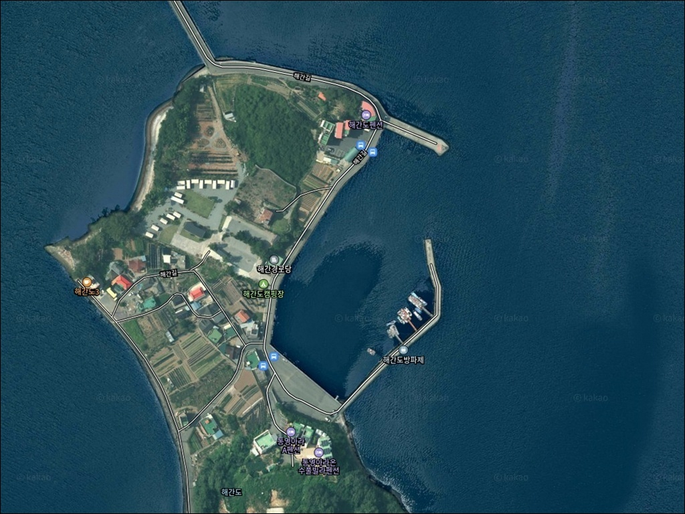
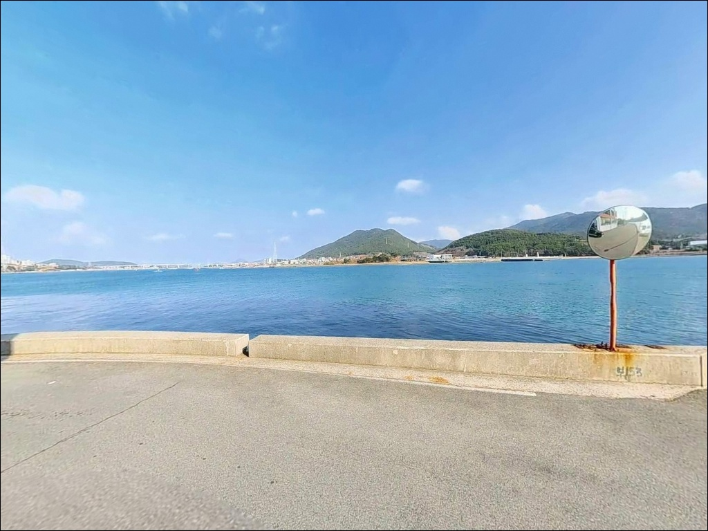
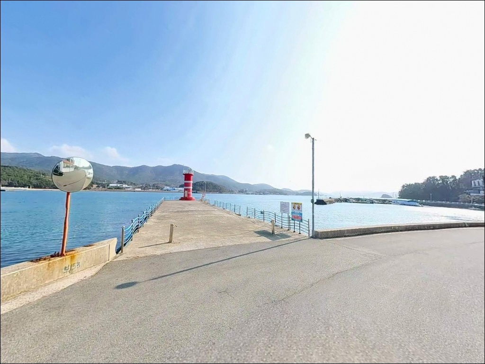
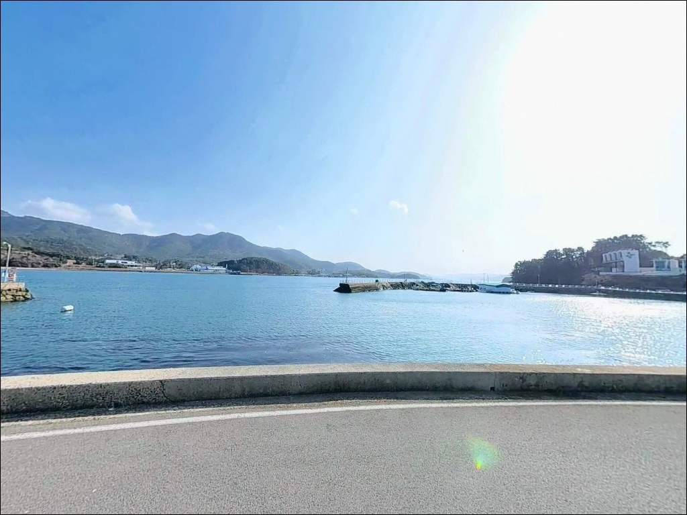
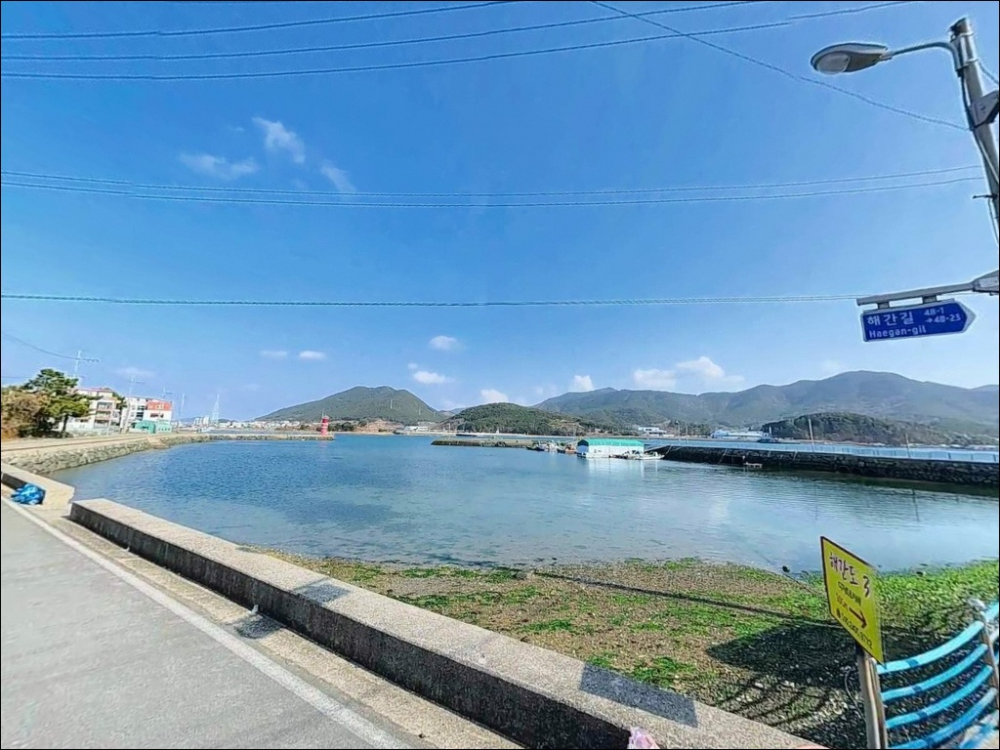
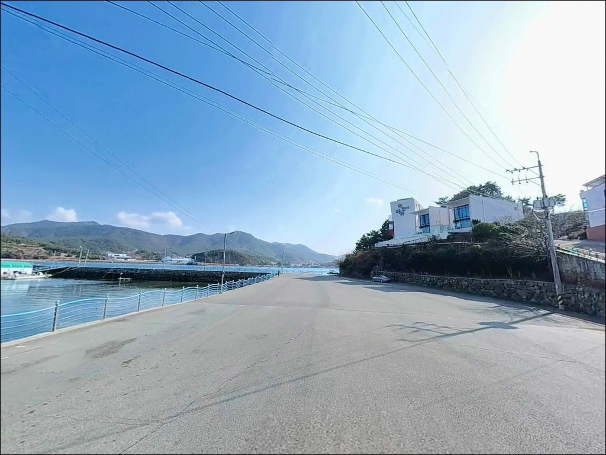
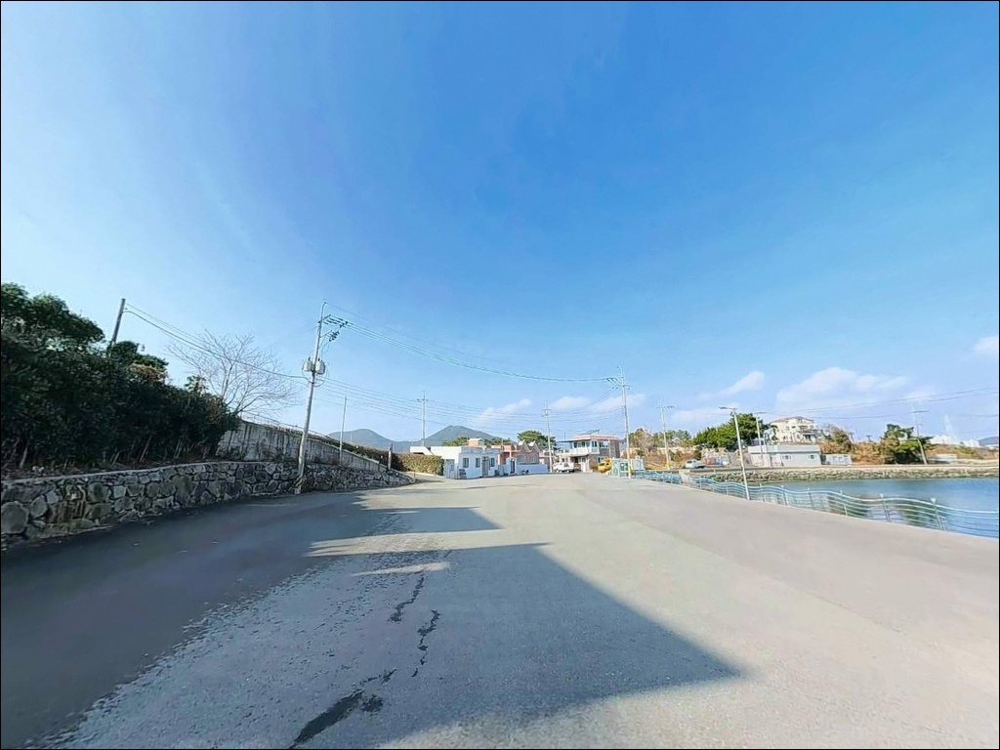
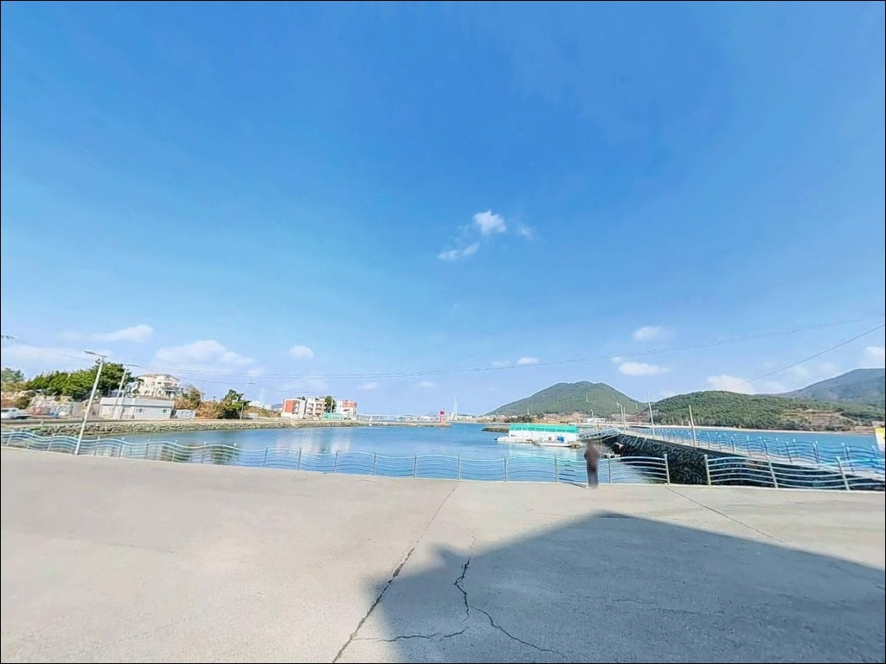
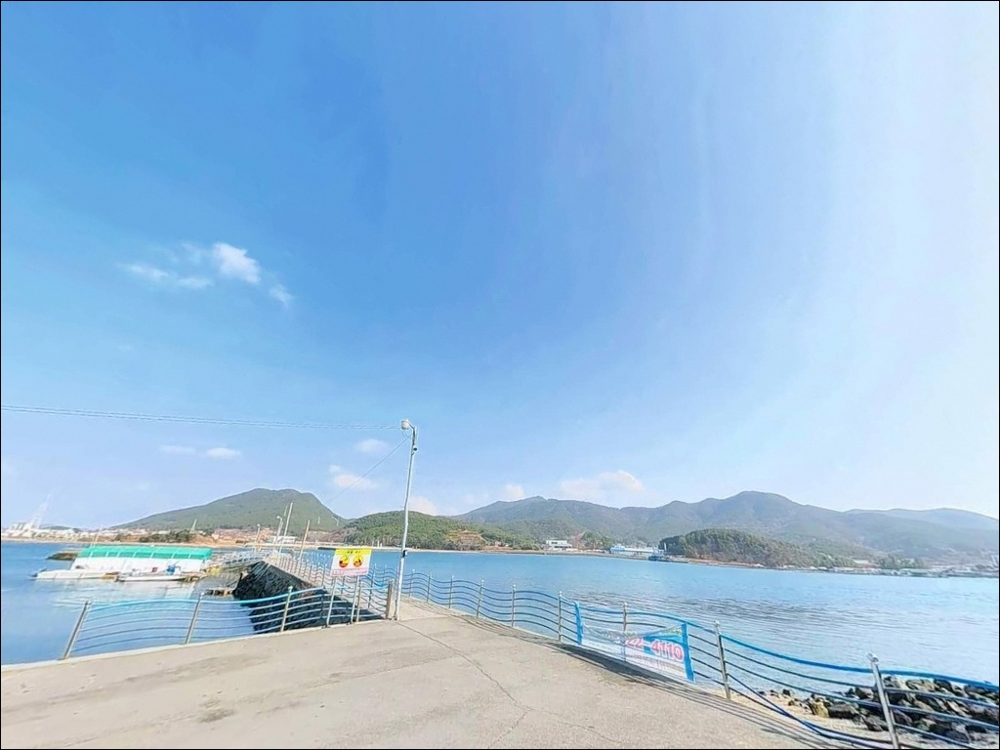

견내량 조류 세기 모르고 갔다가 채비만 날린 통영 해간도항
이 페이지에는 광고(제휴 링크 포함)가 있으며, 광고 링크를 통해 구매하면 운영자가 판매 수익 또는 수수료를 받을 수 있습니다. 포인트 사진: 카카오맵 스카이뷰·로드뷰. 이 페이지의 지도·사진 이미지는 카카오맵의 실제 서비스 이미지와 다를 수 있습니다.


포인트 안내
해간도항
경남 통영시 용남면 장평리 1150-4
견내량 수로 조류 세기를 확인하지 않고 이 포인트에 들어서면,
어떤 채비를 써도 바닥 컨트롤이 어려운 상황을
맞닥뜨리게 됩니다.
해간도항은 통영과 거제도 사이 좁은 해협,
견내량 수로 조류가 집중되는 외항 방향이
핵심 낚시 구간인 포인트입니다.
채비 선택과 타이밍 판단이 먼저여야 하는 이유가 여기에 있습니다.
통영시 용남면 연기마을에서
연기해간교(267m)를 건너면 닿는 소형 섬,
해간도에 자리한 이 선착장은
거제대교가 한눈에 들어오는 절경 속에서
원투·에깅·찌낚시를 복합으로 운용할 수 있는
구조 조건을 갖추고 있습니다.
이 글은 해간도항의 진입 여건, 낚시 지형 조건,
차박 환경에 집중합니다.
특정 조황 단정이나 시설 운영 확인은
이 글의 범위에 포함되지 않습니다.

1. 진입 동선과 포인트 접근성
통영 IC에서 구거제대교 방향으로
해안로를 따라 이동하면 연기마을에 닿습니다.
연기마을에서 해간도로 연결되는 연기해간교는
길이 267m의 소형 연육교로,
차선 폭이 좁아 대향차량과의 교행에 주의가 필요합니다.
승용차와 중형 SUV는 무리 없이 통행 가능하지만,
대형 캠핑카는 진입 전 교량 폭을 확인하는 편이 좋습니다.
교량을 건너 섬으로 들어서면
도로는 소형 마을 도로 수준으로 이어집니다.
선착장 배후 시멘트 공터에
소형~중형 차량 기준 5~7대 수준의 주차가 가능하며,
회차 공간은 방파제 기초부 일대에서 확보됩니다.
어선 작업이 이루어지는 공간이므로
작업 동선을 막지 않는 자리를 먼저 확인해야 합니다.
주차 후보지는 선착장 직근 공터를 1순위로 하고,
공간 여유가 없을 때는 해간교 입구 연기마을 쪽
노면 확장 구간을 활용하는 방식이 현실적입니다.
성수기나 지역 어업 작업 시간대에는
공간 여유가 줄어드는 점을 감안해
평일 이른 시간 진입이 유리합니다.

2. 차박 환경 평가 및 야간 체류 여건
해간도 섬 내부는 민가 밀집도가 낮은 편이며,
선착장 인근은 야간에 차량 통행이 거의 없습니다.
가로등이 설치되어 있어 완전 암흑 환경은 아니지만,
야간 낚시를 위한 개인 헤드랜턴은 별도로 준비해야 합니다.
거제대교와 견내량 수로가 보이는 위치로
탁 트인 바다 조망이 차박 여건의 장점입니다.
다만 인근 펜션과 주민 가옥이 있어
야간 정숙은 방문 에티켓의 기본입니다.
차박을 메인으로 삼기보다
낚시 후 단기 대기 수준의 체류로 접근하는 편이
현실적이며, 주차 공간이 협소한 구조라
사전에 공간 여유를 확인하고 들어가야 합니다.
견내량 방향에서 동풍·남풍이 부는 날에는
바람 영향을 직접 받는 구조이므로,
기상청 해양 예보에서 풍향을 미리 확인하는 것이
야간 체류 쾌적도를 결정하는 변수입니다.
북서풍 계열 바람에는 상대적으로
섬 지형이 바람막이 역할을 합니다.


3. 주변 편의시설 및 인프라 현황
해간도 섬 내부에는 마트나 편의점이 없습니다.
연기해간교를 건너기 전
용남면 소재지 방향 편의점과 낚시점을
미리 들러오는 것이 필수입니다.
식수, 얼음, 채비 여분은
진입 전에 완비하는 것이 기본 준비입니다.
통영 시내(무전동·죽림지구)까지는
차량으로 약 10km 내외입니다.
대형 마트와 낚시 전문점은
이 권역을 이용하면 해결됩니다.
응급 상황에 대비해
비상약품과 연료는 사전에 충분히 확보하고
출발하는 편이 안전합니다.

4. 방문 전 준비사항 및 체크 포인트
해간도항에서 가장 먼저 확인해야 할 것은
견내량 수로의 조류 세기입니다.
바다타임에서 통영 용남면 기준 물때를 확인하고,
사리 전후 강조류 구간은 피하는 것이 기본 판단입니다.
조류가 세지는 시간대에는
30호 이상 무거운 봉돌을 준비해야 채비 컨트롤이 가능합니다.
수로 방향으로 선박 통행이 잦습니다.
야간 낚시 시에는 시야 확보와 구명조끼 착용이 필수이며,
선착장 로프와 어선 동선에
채비가 걸리지 않도록 투척 방향을 잡아야 합니다.
견내량 해역 특성상
주변에 돌미역·굴·홍합 양식 시설이 산재하므로
외항 좌우 방향 확인 후 투척 구간을 설정하는 것이 우선입니다.
출조 전에는 기상청 해상 특보를 반드시 확인합니다.
견내량은 기상 악화 시 조류가 더욱 강해지므로
풍속 예보에서 기준을 넘는 경우
일정을 조정하는 판단이 필요합니다.
출조 전 해간도 낚시 조황 검색을 먼저 해보시는 편이 좋습니다.

5. 견내량 수로 조류를 이용한 낚시 여건 분석
해간도항의 지형적 핵심은
통영 용남면과 거제도 사이 좁은 해협,
견내량 수로와 직접 면한다는 구조입니다.
해협 양측을 오가는 조수가 이 수로에 집중되면서
외항 방향으로 조류 흐름이 살아있는 라인이 형성됩니다.
이 구간이 이 포인트의 조과를 결정하는 자리입니다.
수심은 발밑 기준 3~5m 내외이며,
선착장 전방 20~30m 투척 지점에서
7~10m 수심대가 형성됩니다.
바닥 지형은 암반과 사질대가 섞인 구조로,
어패류와 갑각류가 서식하기 좋은 환경입니다.
선착장 정면과 좌측 갯바위 주변이
주요 탐색 구간으로 꼽힙니다.
한국수산과학회 조사(2016~2017)에서
이 일대 장평리 잘피밭에서 총 32개 어종이 확인된 기록이 있습니다.
어족 다양성이 높은 해역이라는 것을
공식 기록이 뒷받침합니다.
조류가 강한 수로 특성상
만조·간조 전후 조류 흐름이 살아나는 타이밍이
입질 확률이 올라가는 시간대입니다.
최신 조황은 출조 전 검색을 꼭 해보시기 바랍니다.


6. 포인트에 어울리는 낚시 스타일 제안
이 포인트에서 가장 잘 맞는 낚시는
가을철 갑오징어·주꾸미 에깅입니다.
수로 조류를 타며 연안으로 접근하는 두족류 회유 패턴에
외항 수심대가 잘 맞습니다.
조류가 강한 시간대에는
무거운 봉돌을 사용한 가지채비가 유리하며,
정조 전후 타이밍에 에기 운용이 효과적입니다.
볼락 라이트게임도 이 포인트 구조에 잘 맞습니다.
야간에는 선착장 가로등 집어 효과가 있어
가로등 주변 수역에서
소형 지그헤드 채비로
외항 경계 구간을 천천히 탐색하는 방식이 어울립니다.
11월 이후 저수온기에도 볼락 씨알이 올라오는 경향이 있습니다.
감성돔 찌낚시도 봄·가을에 운용할 수 있는 스타일입니다.
조류가 발밑을 스쳐 나갈 때
반유동 채비로 수중여 주변을 흘리는 방식이 기본이며,
만조 전후 타이밍이 입질 확률이 높습니다.
원투낚시는 수로 방향으로 멀리 던지는 운용이 기본입니다.
보리멸·도다리·붕장어를 기대해볼 수 있는 스타일이며,
조류에 채비가 밀리지 않도록
30호 이상 봉돌 사용을 권장합니다.

7. 대안 포인트 및 플랜 B 동선
해간도항 주차 공간이 여의치 않거나
조류가 너무 강해 채비 운용이 어려울 때의
첫 번째 대안은 연기마을 방파제입니다.
해간교를 건너기 전 육지 쪽에 위치하며
발판이 더 넓고 편한 구조로,
동일 견내량 해역 조건을 갖추고 있습니다.
거제도 방향으로 거제대교를 넘으면
거제 사등 방파제가 약 3km 거리에 있습니다.
견내량 수로 반대편에서 같은 조류 패턴을
노릴 수 있는 유사 지형이며,
차량 접근과 주차 여건이 더 여유롭습니다.
통영 미륵도 연안 포구 일대도
짧은 이동으로 다수의 포인트 변경이 가능한 권역입니다.
통영 해역 특성상
섬과 연안이 복합된 구조로 이동 폭이 넓어
플랜 B 선택지가 다양한 지역입니다.

견내량 조류를 읽으면
해간도항이 달라 보입니다
갑오징어 에깅과 볼락 라이트게임을 즐기는 낚시인이라면
해간도항의 수심 구조와 수로 조류 흐름은
잘 맞는 지형 조건입니다.
발밑 3~5m, 전방 7~10m 수심대와
암반·사질 혼합 바닥이 복합 낚시를 가능하게 하고,
거제대교와 견내량이 한눈에 들어오는 자리에
조용히 채비를 펼칠 수 있습니다.
다만 조류 세기를 무시하고 진입하거나,
연기해간교 통행 폭을 확인하지 않고 대형 차량으로 무작정 들어서면
현장에서 계획이 흔들리는 경우가 생깁니다.
물때 확인, 채비 여분, 진입로 사전 점검,
이 세 가지를 갖추고 간다면
통영 내만에서 쉽게 찾기 어려운 조용한 포인트를
온전히 즐길 수 있습니다.
차박과 낚시를 함께 계획하는 분이라면
야간 정숙 조건을 지키는 범위 안에서
거제대교 야경 옆 하룻밤을
기억에 남는 출조로 만들 수 있는 곳입니다.